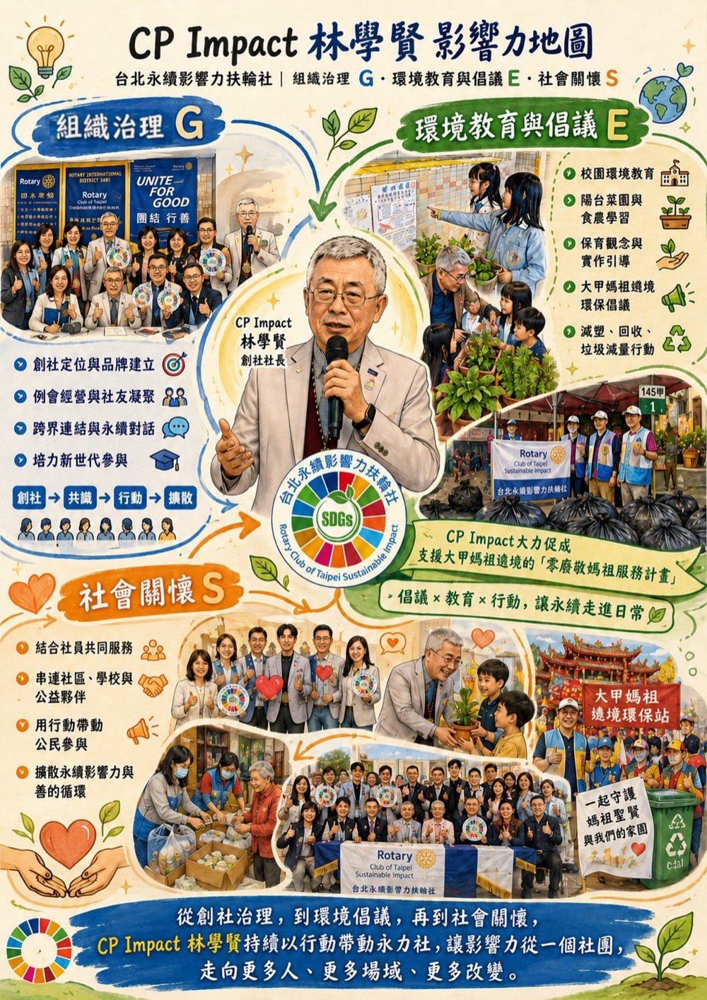

"To advance 'doing good' from a one-time burst of passion into an impact system that can operate over the long term and whose results can be seen."
Through years of involvement in Rotary service and local community work, he observed a recurring pattern: many initiatives are full of passion and emotion, yet lack structure, documentation, and mechanisms for continuity. Once an event ends, the change it created is hard to track, the experience never becomes method, and goodwill cannot accumulate into an asset that can be passed on.
This led him to ask: if goodwill could be systematized, could it spread? If impact could be disclosed, could it form a culture? The birth of the Club originated from exactly this line of thinking.
The founding of the Club was not simply the establishment of a new club, but a transformation in the direction of values. In one discussion, he raised a pivotal question:
"Should we write a sustainability report that truly reflects the real situation of a Rotary club?"
He was not satisfied with formalistic disclosure of results. Instead, he hoped to present club operations, the challenges of participation, and the effectiveness of action honestly. From its earliest days, the Club took "Sustainability x Impact" as its core theme, and set three directions for transformation:
At the governance level, he advanced several innovations:
The Club does not treat the number of events as its core, but builds its growth on community relationships and an institutional culture. Its internal impact chain follows the path of Input → Activity → Output → Outcome → Impact, including rising rates of member participation, increased frequency of exchange, growing trust from external partners, and the generation of cross-sector co-creation and diverse service projects.
Half a year after founding, key officers departed one after another. For a new club, this was a major test. CP Impact did not complain publicly, nor did he pass the pressure on to others. While stabilizing members' emotions, he reassessed manpower and vision, visiting potential successors one by one. He understood clearly that if a philosophy cannot withstand its first storm, it cannot become a long-term structure. This experience laid the resilient foundation of the Club's governance culture.
CP Impact has long focused on agricultural social enterprise and sustainable living. He founded "Taiwan Good Partners Enterprise" and "Le-Nong Sustainable Living Enterprise," spreading environmental advocacy through the social enterprise model.
At Zhongyi Elementary School in Taipei, he promoted a club for "sustainable agriculture / food, farming, and environmental education," gradually forming a complete impact chain. It is not a one-time experience, but a micro sustainability system.
Taipei Zhongyi Elementary School Little Farm Environmental Education Service Project →
The students served at Zhongyi Elementary School include second-generation new immigrants and children raised by grandparents. What CP Impact cares about is not only the provision of resources, but whether the children gain confidence and a stage in the process.
Through experiential learning, the children learn to cooperate, wait for results, and take responsibility for the land. These abilities may not show up immediately on a report card, yet they profoundly shape one's attitude toward life.
The sentence he says most often to members is:
"No problem, go for it. I support you."
This is not a slogan, but a commitment.
Take Lisa's "Zero-Waste Tribute to Mazu" project as an example. To reduce the waste generated during the Dajia Jenn Lann Temple pilgrimage, he personally drove south many times to accompany the negotiations. Facing the temple and the vendors, he offered strategic support and steady backing. He is not the lead actor on stage, but the force behind the scenes. This culture of support makes the Club a safe space for those who take action.
For the past five years, the Club has continuously held the Women's Power Forum. The 2026 theme is:
"From Local Revitalization to ESG Implementation: On the Sustainable Impact of Taiwan's Women's Power"
He hopes to advance moving stories of local revitalization into:
CP Impact's actions align with multiple SDGs, but he does not start from indicators. He starts from problems.
What he cares about are three questions: Can the action transcend time? Can it form a culture? Can it become a replicable model? This long-term thinking makes the Club not only a club of the present, but an action platform that can continue into the future.
He is not only a person who does things, but a person who lets things keep happening.
Within the spectrum of the Club, he is not the institutional engineer but the source of momentum; not a one-time actor but an architect of impact.
He is not content with doing just one good deed. He chooses, instead, to make good deeds into a system that can operate, be disclosed, and continue.